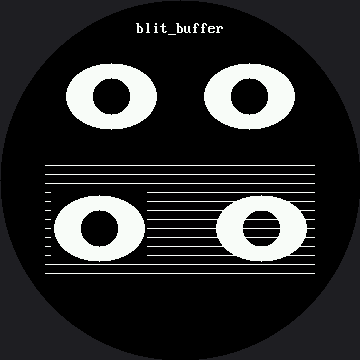

Blit¶
blit_buffer() stamps a whole block of pixels onto the display in one shot. Draw a sprite once
into a buffer in RAM, then copy it wherever — and however many times — you need it.
This is also where the color display's memory budget shows up for the first time, and the arithmetic explains something about this entire kit — more sharply here than on the smaller smartwatch kit, because every screen dimension is 1.5 times bigger, and area (which is what a byte count actually tracks) scales by 1.5 squared.
Two Bytes Per Pixel Changes Everything¶
On the OLED, a sprite was one bit per pixel. Here it is two bytes — sixteen times bigger.
| Sprite | OLED (1 bit/px) | This display (RGB565, 2 bytes/px) |
|---|---|---|
| A 96 × 72 eye | 864 bytes | 13,824 bytes |
| A full screen | 1,024 bytes | 259,200 bytes |
| RP2040 RAM, total | 264 KB | 264 KB |
Look at that last column. A full-screen buffer would be 259,200 bytes out of the roughly 270,336
bytes (264 KB) an RP2040 has — about 96% of it, before MicroPython's own interpreter, heap, and
your program take their share. The smaller smartwatch kit hit the same wall at a gentler angle: its
240 × 240 buffer would have cost 115,200 bytes, only about 43% of the same chip's RAM. Scaling every
screen dimension by 1.5 scaled the byte count by 2.25, and that difference is enough to turn
"expensive" into "impossible." That is the real reason this driver has no frame buffer, and the
reason there is no show() anywhere in this kit.
Every Constraint in This Kit Comes From That Number
 No frame buffer means no
No frame buffer means no show(), which means every drawing call lands on the glass immediately, which means erasing has to be careful and animations only redraw what moved. One arithmetic fact, and the whole kit is shaped by it.
blit_buffer() Is Opaque¶
framebuf's blit() took a key color to skip, so you could stamp a sprite over a background and
let the background show through. This driver has no such option — blit_buffer() sends a solid
rectangle of pixels, background and all.
So shapes.blit_keyed() does it the hard way: it walks each row, finds the runs of non-key pixels,
and sends only those. Read it and you will know exactly what framebuf was doing for you.
display.blit_buffer() |
shapes.blit_keyed() |
|
|---|---|---|
| What it sends | One command, then the whole block | One command per run, per row |
| Background pixels | Painted over whatever was there | Skipped |
| Speed | Fast | Noticeably slower |
| Use it when | The sprite sits on a known background | The sprite must sit on top of something |
Sample Program Code¶
The program builds one eye in an off-screen buffer, then stamps it four times — twice on plain black, and twice over a striped background so you can see exactly what each kind of blit covers up. The eye sprite is 96 × 72, the smartwatch kit's 64 × 48 scaled by 1.5.
# Lab 09: Blitting Buffers
import config
import shapes
display = config.init_display()
WHITE = config.WHITE
BLACK = config.BLACK
FILL = config.FILL
FONT = config.SMALL_FONT
TRANSPARENT = BLACK
# --- build one eye in an off-screen buffer ---------------------------
#
# shapes.sprite() hands back a bytearray of RGB565 pixels. To draw into
# it we need something that behaves like a display, so Sprite below wraps
# the buffer and offers the three calls shapes.ellipse() actually uses.
#
# 96 x 72 is the smartwatch kit's 64 x 48 scaled by 1.5. The buffer it
# needs went up by 2.25x, from 6,144 bytes to 13,824 -- an area cost, not
# a width cost, which is the arithmetic that bites you every time you make
# a sprite "just a little bigger."
EYE_WIDTH = 96 # 64 on the smartwatch kit
EYE_HEIGHT = 72 # 48 on the smartwatch kit
class Sprite:
"""A tiny stand-in for the display that draws into a buffer instead.
shapes.ellipse() only ever calls hline(), so that is all this needs.
Passing this to a drawing function instead of the real display is a
trick worth remembering -- the drawing code cannot tell the
difference, and does not need to."""
def __init__(self, width, height, background=BLACK):
self.width = width
self.height = height
self.buffer = shapes.sprite(width, height, background)
def hline(self, x, y, length, color):
if y < 0 or y >= self.height:
return
for column in range(max(0, x), min(self.width, x + length)):
shapes.sprite_pixel(self.buffer, self.width, column, y, color)
def pixel(self, x, y, color):
if 0 <= x < self.width and 0 <= y < self.height:
shapes.sprite_pixel(self.buffer, self.width, x, y, color)
eye = Sprite(EYE_WIDTH, EYE_HEIGHT)
shapes.ellipse(eye, 48, 36, 45, 33, WHITE, FILL)
shapes.ellipse(eye, 48, 36, 18, 18, BLACK, FILL)
display.fill(BLACK)
# "blit_buffer" is 11 characters of a fixed 8x16 font, so it is 88 px wide
# here exactly as it was on the smaller screen. Only the centering moved.
CAPTION = "blit_buffer"
display.text(FONT, CAPTION,
config.CENTER_X - (len(CAPTION) * FONT.WIDTH) // 2, 21,
WHITE, BLACK)
# top: stamp the same eye buffer twice to get a matching pair. One buffer,
# two trips down the wire, and no ellipse math either time.
#
# A sprite is a RECTANGLE and this screen is a CIRCLE, so the outer top
# corners of these two blits land right on the edge of the safe circle,
# about 168 px from center. Nothing is lost -- those corner pixels are the
# sprite's black background -- but you are still paying SPI bytes to send
# black to a place no one can see it. That is the tax on every rectangular
# blit near the rim of a round display.
display.blit_buffer(eye.buffer, 63, 60, EYE_WIDTH, EYE_HEIGHT)
display.blit_buffer(eye.buffer, 201, 60, EYE_WIDTH, EYE_HEIGHT)
# bottom: a striped background so you can see what each blit covers up.
#
# The smartwatch kit's band ran from y=110 to y=210. Scaled by 1.5 that is
# y=165 to y=315 -- but this band is 270 px wide, and a 270 px row down at
# y=312 sticks out about 9 px past the physical edge of the glass. So the
# band stops before y=280 instead: 279 is the last row on which a 270 px
# span still fits inside config.SAFE_RADIUS. Scaling a rectangle on a
# round screen does not just make it bigger, it walks its corners off the
# display.
for y in range(165, 280, 9):
display.hline(45, y, 270, WHITE)
# left, plain blit_buffer: the eye's black background paints over the
# stripes, because the sprite is a solid rectangle of pixels
display.blit_buffer(eye.buffer, 51, 192, EYE_WIDTH, EYE_HEIGHT)
# right, blit_keyed: black pixels are skipped, so the stripes show
# through. Watch how much slower it is -- that is the price of asking
# about every pixel instead of shipping the whole block. It asks about
# 6,912 pixels here (96 * 72) where the smartwatch kit asked about 3,072.
shapes.blit_keyed(display, eye.buffer, 213, 192,
EYE_WIDTH, EYE_HEIGHT, TRANSPARENT)
Here's what that program draws on the display:

Compare the two bottom eyes carefully. The left one carries a black rectangle with it and punches a hole in the stripes. The right one lets the stripes run right up to the edge of the eye, because every black pixel in the sprite was skipped.
Look closely at the numbers behind that picture, too. A sprite is a rectangle, and this screen
is a circle — scaling a rectangle up does not just make it bigger, it can walk its corners off
the glass. The top two eyes sit close enough to the rim that their sprite corners just reach
config.SAFE_RADIUS, 168 pixels from center; nothing is lost, since those corners are only the
sprite's black background, but the display still spends SPI bytes sending black to a spot no one
can see. The striped band underneath had the same problem: scaling the smartwatch kit's
y=110–210 band by 1.5 would run it to y=315, but a 270-pixel-wide row that low sticks out past
the edge of the circle. So the lab stops the band at y=280 instead — the last row where a span
that wide still fits inside the safe circle.
The Sprite Class Is Worth Stealing¶
Look at what Sprite actually is: an object with hline() and pixel() methods that writes into
a bytearray instead of a display. shapes.ellipse() cannot tell the difference and does not need
to — it just calls hline() on whatever it was handed.
That is a trick worth remembering well beyond this lab. Any drawing function that only talks to an interface can be pointed at something other than a screen.
Transparency Is Not a Property of a Color
 Black is not special here.
Black is not special here. blit_keyed() skips whatever color you point it at, so if you build your sprite on a red background and pass red as the key, red becomes the transparent one. The key is a choice you make, not a fact about the pixel.
Things to Try¶
- Do the memory arithmetic yourself. Work out the byte cost of the eye sprite (96 × 72 × 2 = 13,824), then a full-screen buffer (360 × 360 × 2 = 259,200), and compare both to an RP2040's 264 KB. Then run the same sums for the smartwatch kit's 64 × 48 sprite and 240 × 240 screen, and notice that scaling every dimension by 1.5 scaled every byte count by 2.25.
- Time the two bottom blits. The plain one sends one command and 13,824 bytes. The keyed one sends a command per run, per row — 72 rows here, against the smartwatch kit's 48, so it pays half again as many command overheads. Nobody has measured exactly how much slower that makes it on this panel; run it and find out.
- Change the sprite's background to
config.REDand pass that as the key. Same behavior, different color skipped. - Blit the eye eight times in a ring around the center, checking each spot against
config.inside_circle()first. One buffer, eight stamps, and no ellipse math after the first one.
References¶
- Drawing Ellipses — the function that draws into the sprite buffer
- Color and Bits — what those two bytes per pixel actually contain
- Only Redraw What Changed — the other answer to "how do I avoid sending the whole screen?"
- Blitting Buffers — the same lab on the smaller 240 × 240 kit, where the eye sprite is 64 × 48 instead of 96 × 72